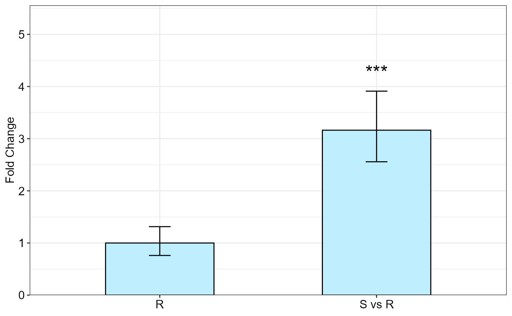

R/qpcrMeans.r
qpcrMeans.RdFold change (\(\Delta \Delta C_T\) method) analysis using a model object produced by the
qpcrANOVAFC or qpcrREPEATED.
qpcrMeans(model, specs, p.adj = "none")an `lmer` fitted model object created by qpcrANOVAFC or qpcrREPEATED functions
A character vector specifying the names of the predictors over which FC values are desired
Method for adjusting p values
Table of FC values, significance and confidence interval.
The qpcrMeans function performs fold change (\(\Delta \Delta C_T\) method) analysis using a model produced by the
qpcrANOVAFC or qpcrREPEATED. The values can be returned for any effects in the model including simple effects,
interactions and slicing if an ANOVA model is used, but ANCOVA models returned by rtpcr package only include simple effects.
# Returning fold change values from a fitted model.
# Firstly, result of `qpcrANOVAFC` or `qpcrREPEATED` is
# acquired which includes a model object:
res <- qpcrANOVAFC(data_3factor, numberOfrefGenes = 1, mainFactor.column = 1, block = NULL)
#> Warning: The R level was used as calibrator.
#> NOTE: Results may be misleading due to involvement in interactions
#> ANOVA table
#> Type III Analysis of Variance Table with Satterthwaite's method
#> Sum Sq Mean Sq NumDF DenDF F value Pr(>F)
#> Type 24.834 24.8336 1 24 84.8207 2.392e-09 ***
#> Conc 45.454 22.7269 2 24 77.6252 3.319e-11 ***
#> SA 0.032 0.0324 1 24 0.1107 0.7422788
#> Type:Conc 10.641 5.3203 2 24 18.1718 1.567e-05 ***
#> Type:SA 6.317 6.3168 1 24 21.5756 0.0001024 ***
#> Conc:SA 3.030 1.5150 2 24 5.1747 0.0135366 *
#> Type:Conc:SA 3.694 1.8470 2 24 6.3086 0.0062852 **
#> ---
#> Signif. codes: 0 '***' 0.001 '**' 0.01 '*' 0.05 '.' 0.1 ' ' 1
#>
#> ANCOVA table
#> Type III Analysis of Variance Table with Satterthwaite's method
#> Sum Sq Mean Sq NumDF DenDF F value Pr(>F)
#> SA 0.032 0.0324 1 31 0.0327 0.8577
#> Conc 45.454 22.7269 2 31 22.9429 7.682e-07 ***
#> Type 24.834 24.8336 1 31 25.0696 2.105e-05 ***
#> ---
#> Signif. codes: 0 '***' 0.001 '**' 0.01 '*' 0.05 '.' 0.1 ' ' 1
#>
#> Fold Change table
#> contrast FC pvalue sig LCL UCL se Lower.se Upper.se
#> 1 R 1.0000 1 0.0000 0.0000 0.3939 0.7611 1.3139
#> 2 S vs R 3.1626 0 *** 2.4433 4.0936 0.3064 2.5575 3.9109
#>
#> Fold Change plot of the main factor levels

# Returning fold change values of Type levels from a fitted model:
qpcrMeans(res$lm_ANOVA, specs = "Type")
#> contrast FC SE df LCL UCL p.value sig
#> S vs R 3.1626 0.1803631 22 2.440304 4.098686 <.0001 ***
#>
#> Results are averaged over the levels of: Conc, SA
#> Degrees-of-freedom method: kenward-roger
#> Confidence level used: 0.95
# Returning fold change values of Conc levels from a fitted model:
qpcrMeans(res$lm_ANOVA, specs = "Conc")
#> contrast FC SE df LCL UCL p.value sig
#> M vs L 1.307369 0.2208988 22 0.951681 1.795994 0.0940 .
#> H vs L 5.869889 0.2208988 22 4.272905 8.063742 <.0001 ***
#> H vs M 4.489848 0.2208988 22 3.268323 6.167915 <.0001 ***
#>
#> Results are averaged over the levels of: Type, SA
#> Degrees-of-freedom method: kenward-roger
#> Confidence level used: 0.95
# Returning fold change values of Conc levels sliced by Type:
qpcrMeans(res$lm_ANOVA, specs = "Conc | Type")
#> Type = R:
#> contrast FC SE df LCL UCL p.value sig
#> M vs L 3.286761 0.3123981 22 2.097677 5.149887 <.0001 ***
#> H vs L 9.691142 0.3123981 22 6.185081 15.184639 <.0001 ***
#> H vs M 2.948538 0.3123981 22 1.881816 4.619940 0.0001 ***
#>
#> Type = S:
#> contrast FC SE df LCL UCL p.value sig
#> M vs L 0.520030 0.3123981 22 0.331894 0.814813 0.0063 **
#> H vs L 3.555371 0.3123981 22 2.269109 5.570760 <.0001 ***
#> H vs M 6.836857 0.3123981 22 4.363420 10.712382 <.0001 ***
#>
#> Results are averaged over the levels of: SA
#> Degrees-of-freedom method: kenward-roger
#> Confidence level used: 0.95
# Returning fold change values of Conc levels sliced by Type*SA:
qpcrMeans(res$lm_ANOVA, specs = "Conc | (Type*SA)")
#> Type = R, SA = A1:
#> contrast FC SE df LCL UCL p.value sig
#> M vs L 2.198724 0.4417977 22 1.165084 4.14939 0.0174 *
#> H vs L 3.466148 0.4417977 22 1.836681 6.54125 0.0005 ***
#> H vs M 1.576436 0.4417977 22 0.835339 2.97502 0.1514
#>
#> Type = S, SA = A1:
#> contrast FC SE df LCL UCL p.value sig
#> M vs L 0.521233 0.4417977 22 0.276197 0.98366 0.0448 *
#> H vs L 3.732132 0.4417977 22 1.977623 7.04321 0.0003 ***
#> H vs M 7.160201 0.4417977 22 3.794126 13.51259 <.0001 ***
#>
#> Type = R, SA = A2:
#> contrast FC SE df LCL UCL p.value sig
#> M vs L 4.913213 0.4417977 22 2.603467 9.27212 <.0001 ***
#> H vs L 27.095850 0.4417977 22 14.357849 51.13476 <.0001 ***
#> H vs M 5.514895 0.4417977 22 2.922293 10.40760 <.0001 ***
#>
#> Type = S, SA = A2:
#> contrast FC SE df LCL UCL p.value sig
#> M vs L 0.518830 0.4417977 22 0.274923 0.97913 0.0434 *
#> H vs L 3.386981 0.4417977 22 1.794731 6.39184 0.0006 ***
#> H vs M 6.528116 0.4417977 22 3.459190 12.31973 <.0001 ***
#>
#> Degrees-of-freedom method: kenward-roger
#> Confidence level used: 0.95